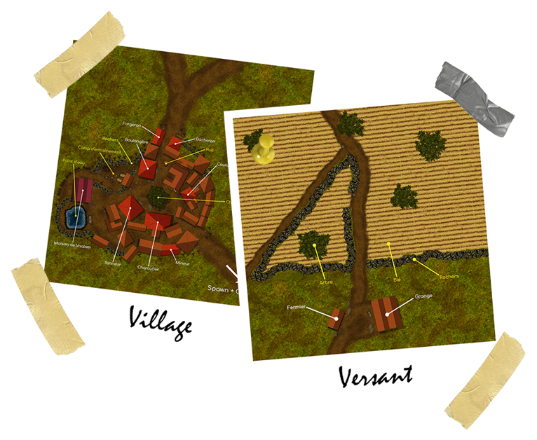

MON PORTFOLIO
DESCRIPTION GÉNÉRALE
Sur ce site Internet, vous trouverez un condensé de mes réalisations, qu'elles soient dans un cadre professionnel ou personnel.
À PROPOS DE MOI
Je m'appelle Thomas Dagorne, j'ai 18 ans et je suis en première année de BUT Informatique. Je suis un grand passionné de design et de jeux vidéo.
Pour plus d'informations, je mets à votre disposition mon CV.
Mon CV
MES PROJETS
- PROTOTYPE DE SITE INTERNET
J'ai pu créer une entreprise fictive avec deux de mes camarades à l'occasion d'un projet professionnel. Étant passionné de sneakers, je me suis donc imprégné de ce sujet pour en faire un Site Internet.
Ce prototype de Site Web est composé de différentes sections : vente, achat ou encore articles.
- JEU DU TAQUIN
Avec l'aide d'un camarade et pour un projet professionnel, nous avons créé et codé ce jeu du taquin en C. Le but de ce jeu est de reconstituer une image découpée en plusieurs morceaux puis mélangés.
Dans ce jeu, je me suis principalement occupé de l'aspect graphique, avec la création d'un "univers" et modifiant des images et les faire devenir interactives.
- AFFICHE
Pour le plaisir, j'ai réalisé une affiche sur la tournée du rappeur français Deen Burbigo pour son dernier projet musical : OG SAN.
J'ai repris la cover de son projet où on le voit couper un bonsaï et j'ai rajouté le reste.
- CRÉATION D'UN VILLAGE
Je travaille activement sur un projet personnel, beaucoup plus important qu'un simple village, sur un jeu qui n'est pas encore sorti mais similaire à Minecraft. Sur ce projet, je m'occupe des parties "design" et "construction". Nous avons créé un univers de toute pièce avec ses spécificités et son aspect graphique.
J'ai donc mis au point des prototypes sur le jeu Minecraft assez conséquents et qui m'ont demandé de nombreuses heures de travail.
Dans un premier temps, j'ai créé un plan en 2D, du village vu de haut, afin de pouvoir se faire une idée de comment ce village sera agencé. Ce travail d'agencement a été réalisé sur le logiciel PhotoShop.
Sur ces photos, vous pouvez apercevoir des routes. Celles-ci mènent à divers endroits. Par exemple, la route du haut relie le village au versant.
En deuxième et dernier temps, j'ai essayé de respecter le plus possible l'agencement du plan en faisant le village grandeur nature sur le jeu Minecraft. Et voilà le résultat.

- RÉDACTION D'ARTICLES
En 2020, durant mon temps libre, j'écrivais des articles sur des thèmes et sujets qui me plaisaient. Je les postais sur un Serveur Discord où l'on peut encore et toujours les consulter.
Ces articles sont le fruit de recherches approfondies et détaillées. J'ai par exemple écrit sur le sujet des Naines bleues, d'Ed et Lorraine Warren ou encore de la Préfecture de Yamagata se trouvant au Japon.
- RETOUCHES DE PHOTOS
Depuis trois ans, je fais de temps en temps des retouches sur des photos que je prends. Pour cela, j'utilise le logiciel PhotoShop.
Avec des amis, nous prenions une journée pour aller dans une ville, un village, ou une forêt et on essayait de trouver des endroits intéressants pour prendre des photos.
Voici quelques-unes de mes réalisations :